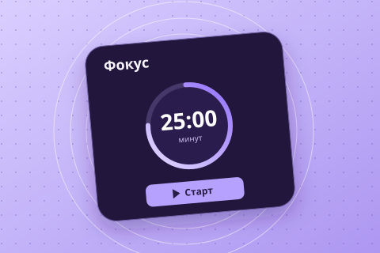
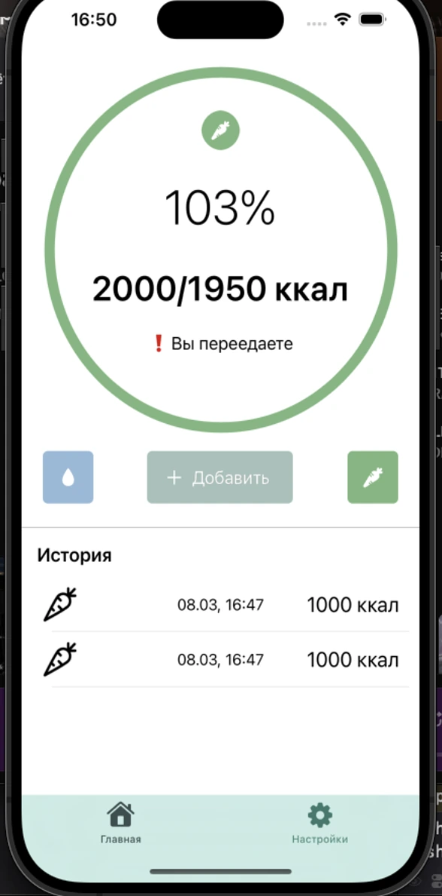
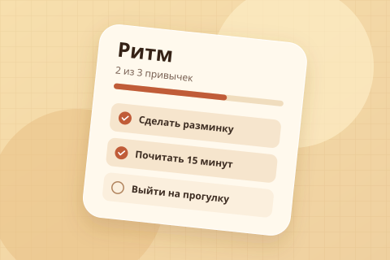
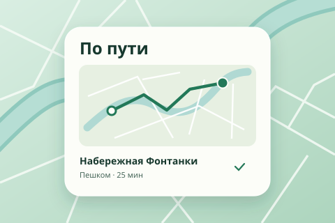

Продуктивность
Фокус
Таймер для 25 минут работы с возможностью поставить сессию на паузу.
Портфолио iOS
Проектирую интерфейсы для iOS.
Учусь на прикладной информатике и пишу на Swift. Здесь показываю свой дневник питания и три интерактивных прототипа.

Три учебных веб-прототипа. Каждый можно опробовать прямо на странице.

Таймер для 25 минут работы с возможностью поставить сессию на паузу.

Список привычек на день и счётчик, который обновляется при каждой отметке.

Подборка прогулочных маршрутов в Петербурге с фильтром по длительности.
Поделитесь отзывом о прототипах или предложите идею для учебного проекта.
25:00
Готов к началу
Доступно маршрутов: 3